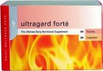

<
"Fourways Chiropractic For the Whole Family"
Good nutrition will allow the body to heal faster, become stronger physically and boost the immune system. This is where the Sportron difference is with Sportron's FoodState® Technology. Find out how to order Sportron products below.
The threat of illness is a reality for every person. Chronic lifestyle related diseases have become the largest causes of death in our modern world. Research, however, has demonstrated that nutrition plays a critical role in protection against disease.
However, people do not obtain sufficient quantities of essential nutrients from food. Soils have become depleted of essential nutrients; the nutrient value of food has been eroded through modern processing, transportation and preservatives. These factors, combined with poor food choices and imbalanced diets, contribute to an inadequate intake of vital nutrients. Nutritional supplementation is, therefore, essential in the modern world. Unfortunately, there are significant differences in the quality and efficacy of different nutrient supplements available. The countless brands of vitamins and minerals available today all use isolated nutrients which are removed from their natural environment and presented in a synthetic chemical format. The body has immense difficulty in recognising and processing these chemically isolated nutrients. Furthermore, because these isolated chemicals are not combined with other food elements including proteins, carbohydrates and lipids, they are poorly absorbed by the body and are also not effectively utilised.
Nutrition is one of the other elements chiropractors may look at when treating. Sportron representative, Leo Schoots, can supply information to those that need and want to improve their overall health with Sportron products that studies have shown, and what we believe to be, some of the best nutritional supplements and health products available currently.
You can order any Sportron product by clicking this link. The catalogue of Sportron supplements and products is very large and changing from time to time so with pleasure email Leo Schoots for any specific areas of nutrition you are looking at. Living in Cape Town, Johannesburg, Durban - no problems - you can also order by:
Below are some of the most popular Sportron products:
Ultragard Forté - the Combination of Phytocology and FoodState® Technology. Ultragard Forté is considered to be the ultimate daily supplement available in the world. This highly advanced supplement combines both the FoodState and phytocology technologies in a single, powerful product. Ultragard Forté is a complete supplement providing the dosage of vitamins and minerals required by the body on a daily basis, ensuring that the body gets an optimum amount of nutrients in a form as close to nature as possible.
The three main functions of Ultragard Forté are:
Each two capsules contain: FoodState® complex: Betacarotene (2.2mg active) 82mg, Vitamin D (2.5µg active) 103µg, Vitamin E 21mg, Vitamin C 123mg, Thiamin 3mg, Riboflavin 8mg, Niacinamide 37mg, Vitamin B6 5mg, Folic Acid (100µg active) 10mg,Vitamin B12 (0.5µg active) 103µg, Biotin 15mg, Pantothenic Acid 12mg, Calcium 185mg, Phosphorous 123mg, Iron (7.5mg elemental) 154mg, Magnesium 62mg, Zinc (2.5mg elemental) 51 mg, Iodine (75µg elemental) 5mg, Selenium (150µg elemental) 54mg, Potassium (3mg elemental) 62mg, Boron (0.5mg elemental) 52mg, Copper (0.25mg elemental) 26mg, GTF Chromium (25µg elemental) 13mg, Choline 10mg, PABA 10mg, Inositol 10mg, Molybdenum (15µg elemental) 8mg, Manganese 5mg. Ultragard herbal blend: 200mg (Broccoli, Kale, Radish, Cat's Claw, Chelidonia extract, Curcumin extract, Tomato, Carrot, Celery, Turmeric concentrate, Rosemary) Betatene 32mg (Betacarotene 2.3mg, Alphacarotene 72µg, Zeaxanthin 14.4µg, Cryptoxanthin 17.6µg, Lutein 11.2µg), Grape skin extract 50mg, Cabbage 30mg, Grape seed extract 20mg, Green Tea 20mg, Garlic 12.5mg, Seaweed 10mg, Lipoic Acid 5mg, Coenzyme Q10 2mg, Lycopene 2mg, Resveratrol 0.4mg.
The modern daily diet is generally lacking in essential fatty acids which can lead to:
Essential fatty acids come from both animal and vegetable sources and are necessary elements for normal functioning of the body. Omegatone provides an excellent source for easy absorption of these essential nutrients.
Each capsule contains: FoodState® Vitamin B6 complex 5mg, FoodState® Magnesium complex 20mg, FoodState® Zinc complex 20mg, Evening Primrose oil 125mg (8% GLA), Salmon oil 200mg (12% EPA + 8% DHA).
Especially useful in meeting the nutritional needs of children, particularly those with:
These problems can result from an inadequate supply of the Omega 3 and 6 essential fatty acids, Vitamin B6, Magnesium, and Zinc. Melotone Syrup supplies all of these nutrients combined with other micronutrients that provide nutritional support for adults and children.
Each 5ml contains: Vitamin D 50iu, Vitamin C 200mg, Thiamine HCl 3mg, Riboflavin 3mg, Nicotinamide 10mg, Vitamin B6 10mg, Vitamin B12 12µg, Pantothenic acid 10mg, Calcium lactate 250mg, Magnesium lactate 125mg, Zinc lactate 7.5mg, Evening Primrose Oil 200mg (10% GLA), Salmon Oil 266mg (12.5% DHA & 17% EPA), Methyl Sulphonyl Methane 50mg, Glycine 50mg, l-Taurine 25mg, Chromium Polynicotinate 30µg, Vanadium 10µg.
Whizz kidz gummyz are a fruit flavoured FoodState multivitamin and mineral supplement. These are essential nutrients found lacking in the diets of children today. The greatest benefit is that the gummyz supply the nutrients in a form which will be absorbed better and retained by the body longer than any other isolated vitamin and mineral supplement. Whizz kidz can be taken from one year of age to not only make nutrition fun but help sustain growth and development.
Good nutrition and health should begin at the youngest stages of life, and these habits should be sustained throughout life into the golden years. If children learn how important nutrition is when they are young, and develop the habit of taking a supplement everyday, they may live longer healthier lives! Children have special dietary needs because of the speed at which their bones, teeth, nervous, immune and hormonal systems grow and develop.
Helps to provide relief from pain and swelling or arthritis., osteoporosis, gout, bursitis, muscle cramps. It helps increase mobility of joints, improve tissue strength, help to regenerate cartilage and decrease inflammation and joint degeneration.
Contains: Mucopolysaccharides - sulphur-containing substances that form the glue that holds all body tissues together and therefore account for the strength of tissues. Glucosamine - nutritionally promotes joint health by enhancing the body's ability to maintain and regenerate cartilage, which is the tissue found in joints and is necessary for cushioning and shock absorption. If the cartilage degrades, the bones will come into direct contact and this will lead to pain, inflammation and limited movement. Glucosamine has been shown in studies to be an effective nutritional support for arthritis. Green Tea - antioxidant and also has the ability to relax muscle. Bromelain - Enzyme obtained from pineapples that helps break down the hard bonds that cause the joints to become stiff. MSM - an organic source of Sulphur which is an important component of the cartilage and, therefore, helps maintain flexibility and elasticity. Results of several studies showed that supplementation with MSM reduced joint degeneration and inflammation. Chondroitin - Major constituent of cartilage. It binds water in the cartilage which acts as a shock absorber and helps carry nutrients to the cartilage.
Free radicals are molecules that are produced by the body as it performs its normal functions. The body has natural antioxidants that help to neutralize these molecules so that they can not cause any damaging effects. Unfortunately, exposure to the sun, pollution, cigarette smoke and other chemicals in food, water and air all increase the amount of free radicals that are produced and that the body can not naturally cope with. If antioxidant supplements are not taken, the free radicals can lead to many chronic conditions and increased ageing. Ultravine contains a combination of super antioxidants including those from the red grape. It has a high ORAC (Oxygen Radical Absorbance Capacity) score, confirming its potent ability to destroy free radicals.
Benefits of Ultravine include:
Each serving (30ml) contains: Proprietary high ORAC botanical concentrate 445mg: Red wine extract, Green tea extract, Quercetin, Resveratrol, Grape seed extract. Other ingredients: Water, Glycerin, Flavour, Citric acid, Potassium sorbate, Sodium benzoate, Sucralose.
Everyone needs a good source of calcium. Because of poor food choices, dairy products alone do not provide us with adequate amounts for the correct functioning of:
Adequate Calcium intake throughout one’s life & particularly during the developmental years is important, as once bone density is lost, it cannot be replaced. Calcitone provides calcium combined with other nutrients for enhanced absorption. It is suitable for children and adults and is a highly recommended calcium supplement.
Each tablet contains: FoodState Biofood™ complex: Vitamin C 120mg, Vitamin D 212µg, Calcium 240mg, Magnesium 200mg, Potassium 100mg.
Completron is a general maintenance supplement for adults who want to:
Each tablet contains: FoodState® complex: Betacarotene (2.2mg active) 82mg, Vitamin D (2.5µg active) 103µg, Vitamin E 21mg, Vitamin C 123mg, Thiamin 3mg, Riboflavin 8mg, Niacinamide 37mg, Vitamin B6 5mg, Folic Acid (100µg active) 10mg,Vitamin B12 (0.5µg active) 103µg, Biotin 15mg, Pantothenic Acid 12mg, Calcium 185mg, Phosphorous 123mg, Iron (7.5mg elemental) 154mg, Magnesium 62mg, Zinc (2.5mg elemental) 51 mg, Iodine (75µg elemental) 5mg, Selenium (150µg elemental) 54mg, Potassium (3mg elemental) 62mg, Boron (0.5mg elemental) 52mg, Copper (0.25mg elemental) 26mg, GTF Chromium (25µg elemental) 13mg, Choline 10mg, PABA 10mg, Inositol 10mg, Molybdenum (15µg elemental) 8mg, Manganese 5mg.
Nasogard nasal spray is used to moisturize and cleanse the nasal passages and helps maintain sinus health.
Nasogard can be used for:
Calcium is essential for many body functions and adequate intake is important because the body loses calcium every day. Extra calcium needs to be taken during pregnancy and to assist in the management of deficiency states. Vitamin D must also be taken with Calcium to aid in absorption and for bone growth.
Each tablet contains: FooState BioFood™ complex: Vitamin D 50iu, Calcium 800mg, Magnesium 267mg.
Vitamin C is an essential antioxidant, necessary for:
It has many speculated benefits, but it’s reputation for aiding cardiovascular health comes from the increasing body of evidence that suggests it strips cholesterol from blood vessel walls and helps prevent capillary fragility, particularly in combination with bioflavonoids. Vitamin C can be taken daily to provide the entire family with protection.
Each tablet contains: FoodState® Vitamin C 200mg: Bioflavonoids 64mg, Pectin 150mg.
With the hustle and bustle of our daily lives it's nice to take a break to calm down - and what better way than with a revitalising, energy-inducing beverage. Delicious, Refreshing, Nutritious, for the whole family!
Ingredients: Gel of Aloe Vera, Citric Acid, Chamomile Extract, Deionized Water, Potassium Sorbate, Beta Carotene, Cranberry Juice, Sodium Benzoate, Calendula, Ginseng.
A combination of sophisticated micronutrients designed to support the nutritional health of the body's circulatory system - the heart, arteries, veins & capillaries.
Sportron's Circutron contains a combination of FoodState® Vitamin C and a Chinese Herbal Blend designed to support the nutritional health of this system.
Symptoms that suggest there could be a circulatory system problem include:
Each capsule contains: FoodState® Vitamin C 50mg, Rutin 25mg, Mucopolysaccharides 25mg, Herbal blend 200mg: Amber, Angelica, Calamus, Euphoria, Longan, Ganoderma, Ginseng, Hawthorn, Magnetitum, Os draconis, Polygala, Salvia, Schisandra, Silk Tree, Ziziphus.
The digestive system is a finely balanced, precision laboratory which modifies foods taken into the body to ensure that essential nutrients can be absorbed and used by the body cells.
Many problems can be traced back to an inefficient digestive system:
Digestron aids the body in the absorption of required nutrients and elimination of any waste.
Each tablet contains: Glutamine 60mg, Pineapple extract 30mg, Herbal blend 400mg: Angelica Chrysanthemum, Ginger, Hawthorn, Inula, Kudzu Magnolia, Massa Fermentata, Mint, Mother of Pearl, Patchouli, Pinellia, Poria, Sausserea, Tangerine, Trichosant.
Femtron has been specifically designed to provide optimal nutritional support for the hormonal system of women. PMS and mood changes are symptoms that could be indicative of a hormonal imbalance. Femtron will assist the body to ease the symptoms by providing proper nutrient support where it's needed most.
Each tablet contains: Herbal blend 400mg containing: Achyranthes, Alisma, Angelica sinensis, Cinnamon, Citrus peel, Corydalis, Costus, Cyperus, Dioscorea, Hawthorn, Lingusticum, Peony, Rehmanniae, Safflower, Silk tree, Uva Ursi, White willow bark.
Gentron is a product formulated specifically for men. The nutrients that form a part of this product are carefully chosen to provide micro-nutrient balance to assist in the maintenance of maximum vitality and to assist with symptoms of hormonal imbalance such as inflammed skin.
Each capsule contains: FoodState® Zinc 3mg, Lecithin 40mg, Arginine 100mg, Herbal blend 350mg containing: Alisma, Cervi Parvum, Chinese Yam, Cistanche, Curculigo, Cynomorium, Dipsacus, Drynaria, Epimedium, Eucommia, Fo-Ti, Ginseng, Muira Puama, Poria, Rehmannia.
In today's rapidly changing and demanding world we all live under increasing pressure and the requirements of ordinary living are placing more and more strain on old and young alike.
Signs of a nervous system that is out of balance can be:
Neurotron is a specifically formulated dietary supplement that will help you cope nutritionally with the challenges of a busy and stressful world.
Each capsule contains: FoodState® Vitamin B1 1.4mg, Vitamin B2 1.6mg, Vitamin B3 6mg, Vitamin B6 2mg, Vitamin B12 0.001mg, Pantothenic acid 6mg, Folic acid 0.1mg, Magnesium 5mg, Glutamine 50µg, Chamomile 25mg, Sage 25mg, Valerian 25mg, Passiflora 50mg, Hops (Humulus lupulus) 40mg, Skullcap (Scutteleria) 30mg.
Respitron is a uniquely formulated dietary supplement designed to support the nutritional status of the respiratory system. Smoking, airborne pollution and poor dietary practices all play an active role in creating system disturbances, such as:
Respitron can be taken by people who are experiencing disturbances of this nature in order to ensure that the body maximises its defence mechanisms.
Respitron Syrup is a specially formulated liquid nutritional supplement designed to support the nutritional status of the respiratory system. Respitron Syrup is blended in a base of honey and fructose.
Each 10ml contains: Vitamin A (750µg RE) 2500iu, Vitamin D 250iu, Vitamin E 25iu, Vitamin C 50mg, Thiamine(Vitamin B1) 5mg, Riboflavin(Vitamin B2) 2mg, Vitamin B6 5mg, Vitamin B12 5µg, Pantothenic acid 5mg, Calcium 50mg, Magnesium 20mg, Zinc 2.5mg, Betacarotene 1500iu, Methyl Sulphonyl Methane 100mg, Pineapple extract 20mg, Histadine 20mg, Tyrosine 10mg, Chickweed 5mg, Licorice root 5mg, Echinacea 5mg, Quercetin 5mg, Garlic 0.04mg, Drosera 20µg, Hydrastis 20µg, Honey.
The Urinary System is a system of organs that produces and excretes urine containing unwanted wastes, excess water, salts, and nitrogen compounds. Excessive or inadequate production of urine may indicate illness, for example, the presence of glucose in the urine. Supplementation with Uritron tablets will help keep the tract healthy whilst also maintaining body fluid balance.
Each tablet contains: Beta Carotene 2.5mg, Vitamin B6 5mg, Potassium 5mg, Zinc 2.5mg, Betasitosterol 50mg, Arginine 75mg, Cysteine 75mg, Pumpkin seed 50mg, Herbal blend 250mg: Alisma Root, Anamarrhena, Cornus Fruit, Dandelion, Dioscorea, Peony, Phellodendron, Poria Cocos, Rehmannia, Stinging Nettle, Uva Ursi.
The colon and digestive system significantly impact your health. Many diseases and the abdominal discomfort people experience are related to the build-up of waste in the colon which can contaminate the rest of the body. Internal cleansing is important for the maintenance of good health and to enhance the effectiveness of a weight loss program.
Each capsule contains: Senna leaf powder 50mg, Cascara Sagrada bark powder 80mg, Psyllium husk powder 50mg, Cassia (Cinnamon) 80mg, Cayenne (Capsicum) 50mg, Aloe Vera powder 25mg, Ginger root powder 20mg, Buckthorn Bark coarse powder 20mg, Liquorice root powder 20mg, Apple pectin 20mg, Celery seed powder 20mg, Peppermint leaf powder 20mg, Fennel seed powder 20mg.
*Femplex should not be used by women who have had breast cancer or liver disease.*
Femplex contains phytoestrogens, herbals and FoodState® nutrients to assist women with the management of menopausal symptoms such as:
Each daily dose (2 tablets) contain: FoodState® blend: Betacarotene 1.6mg, Vitamin B2 1.6mg, Vitamin B6 1.6mg, Vitamin B12 4µg, Folic acid 160µg, Zinc 2mg, Magnesium 8mg, Vitamin E 5iu, Iron 2mg Chromium GTF 20µg: Soy Isoflavones 25mg, Humulus 40mg, Wild Yam 50mg, Damiana 50mg, Black cohosh 120mg, Horny Goat Weed 200mg, Ginkgo Biloba 50mg.
Floraplex is a symbiotic supplement because it contains a combination of probiotics and prebiotics. Probiotics are living microorganisms which when ingested in certain numbers, exert health benefits. The two species thought to have the most beneficial effect are the Bifidobacteria and Lactobacillus species which have been included in the Floraplex. Sportron's Floraplex contains Lafti® probiotics which have been specially selected and formulated to provide superior stability in surviving in the acidic stomach environment as well as their ability to adhere to the wall of the colon and to colonize the colon. Floroplex also contains Lactitol, a prebiotic or non-digestible food ingredient that may be beneficial by selectively stimulating growth and/or activity of bacteria in the colon.
Floraplex probiotics, in addition to maintaining the microflora of the gastrointestinal tract, also help to:
Ingredients: LAFTI® B94 Bifidobacterium animalis subsp. lactis 5 billion CFU, LAFTI® L10 Lactobacillus acidophilus 5 billion CFU, Lactitol 2.5g, Maltodextrin 2g.
Glucoplex is a very sophisticated product which has been scientifically developed to assist in cases of abnormal sugar metabolism. There is a proliferation of disorders today because of the over consumption of sugar in the modern diet. Symptoms such as excessive thirst, frequent urination and fatigue may indicate a sugar imbalance.
Each tablet contains: Vitamin A 667iu, Magnesium 7mg, Chromium 50µg, Vanadium 33µg and Molybdenum 7µg, Phaseolus vulgaris 50mg and Extract of Lagestroemia speciosa 24mg.
At the earliest indication of inflammation or that the body is run down, Infagard, with powerful ingredients such as Echinacea, Goldenseal and Garlic, can be used to help the body manage symptoms such as:
Just a few drops under the tongue will boost the body’s immune system to help fight the foreign organisms causing infection or inflammation.
Ingredients: Echinacea, Garlic, Peppermint, Yarrow, Lemon Verbena, Tangerine, Astragalus, Chamomile and Golden seal in an alcohol base.
Mental Fitness is a unique supplement that supplies nutrients essential not only for optimal brain and nervous system function, but are also part of the structure of the system. Daily supplementation will help for symptoms such as poor memory and concentration.
Each tablet contains: Foodstate blend: Vitamin B1 2.5mg, Vitamin B2 2.5mg, Vitamin B6 2.5mg, Vitamin B12 2.5mcg, Folic acid 200mcg, Niacinamide 5mg, Pantothenic acid 5mg, Choline 10mg; Acetyl-l-carnitine 250mg; Omega 3 DHA/EPA powder 100mg; Phosphatidyl serine 50mg; Arginine Pyroglutamate 50mg; Ginkgo Biloba 30mg; l-Tyrosine 25mg; l-Glutamine 25mg; l-Taurine 25mg; Siberian Ginseng 25mg; Alpha Lipoic acid 10mg.
A unique combination of herbal ingredients in liquid form. A few drops under the tongue will have a relaxing and calming effect to help those individuals who are experiencing restless sleep patterns.
Ingredients: Avena Sativa, Melissa, Valeriana, Passiflora, Humulus Lupulus and Scuttellaria in an alcohol base.
A compromised immune system can lead to many types of degenerative disorders that can strike at any age - young or old. Phytogard is especially important for individuals who already have a compromised immune system.
It can be given to assist in:
Phytogard contains plant sterols which have been well researched for their benefit as an immunomodulator with important implications for assisting with immune dysfunctions. FoodState® Selenium and Zinc are also included because of their role in preserving CD4 lymphocyte counts and because the soil has been found to be depleted in these minerals.
Each capsule contains: FoodState®: Vitamin A 250µgRE, Vitamin B12 2.5µg, Zinc 2.5mg, Selenium 75µg, n-Acetyl Cysteine 100mg, Betasitosterol 30mg, Alpha Lipoic Acid 10mg.
A compromised immune system can lead to many types of degenerative disorders that can strike at any age - young or old. Phytogard syrup is especially important for individuals who already have a compromised immune system.
It can be given to assist with:
Each 5ml contains: FoodState®: Vitamin A 250µgRE, Vitamin B12 2.5µg, Zinc 2.5mg, Selenium 75µg, n-Acetyl Cysteine 100mg, Betasitosterol 30mg, Alpha Lipoic Acid.
Sexual dysfunction in men can be from either a physical cause, such as injury to the nerves or blood flow going to the penis, or psychological, such as anxiety. It is often a symptom of a much larger disease. Sexual dysfunction is also prevalent in women leading to lowered libido. PrimeX tablets not only assist in improving blood flow and balancing of hormonal levels, but also helps increase energy levels, and helps improve lowered libido and enhances immune system function. PrimeX tablets can be taken daily to help men and women enjoy life’s pleasures to the fullest!
Each tablet contains: FoodState® Vitamin C 25mg, Niacin (Vitamin B3) 25mg, l-Arginine100mg, Lysine 50mg, Horny Goat Weed (Epimedium grandiflorum) 150mg, Maca root extract (Lepidium meyeniI) 125mg, Siberian Ginseng 100mg, Damiana leaf powder (Turnera diffusa) 50mg, Saw Palmetto berry 40mg, Puncture Vine (Tribulus terrestris)30mg, Ginkgo Biloba leaf 25mg, Muira Puama (Ptychopetalum olacoides) 25mg, Grape seed extract 25mg, Oat straw (Avena sativa) 15mg.
*All Sportron products orders and enquires from this web page can go through Sportron representative, Leo Schoots.
Other Health Products: